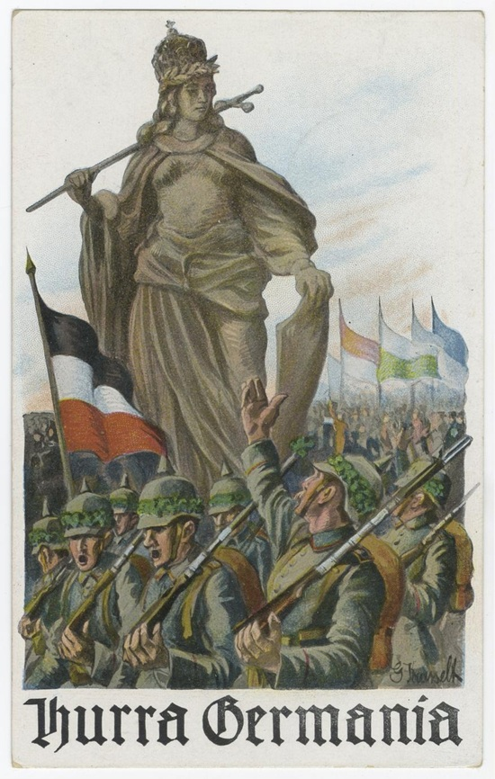
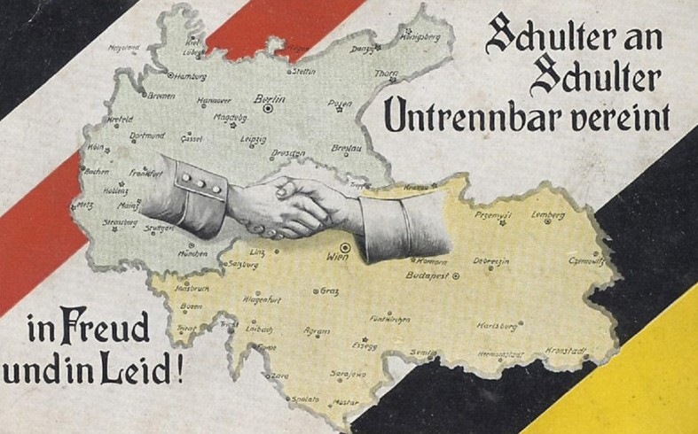
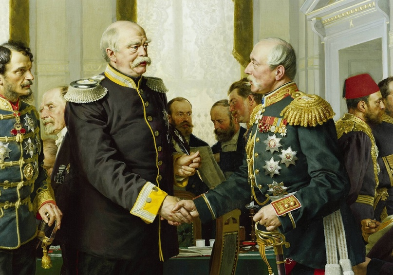

Почему распался союз России и Германии?
Автор статьи: Максим Вахминцев
Опубликовано: 28 мая 2024
Опубликовано: 28 мая 2024
Статья в группе ВК Историческая империя: https://clck.ru/3M68Vn
После взятия Парижа германскими войсками в ходе франко-прусской войны Россия стала открыто выражать обеспокоенность затягиванием хода войны. Ранее Петербург объявил об односторонней денонсации Парижского мира после того, как режим Бонапартов, выступавший одним из его главных гарантов, оказался свергнут в ходе Сентябрьской революции 1870 года. Однако Александр II и Горчаков не были заинтересованы в чрезмерном ослаблении Франции, видя в этом угрозу стабильности на европейском континенте.
После взятия Парижа германскими войсками в ходе франко-прусской войны Россия стала открыто выражать обеспокоенность затягиванием хода войны. Ранее Петербург объявил об односторонней денонсации Парижского мира после того, как режим Бонапартов, выступавший одним из его главных гарантов, оказался свергнут в ходе Сентябрьской революции 1870 года. Однако Александр II и Горчаков не были заинтересованы в чрезмерном ослаблении Франции, видя в этом угрозу стабильности на европейском континенте.
Объединение Германии 1871 года и русско-турецкая война 1877-1878 гг. высветили острую необходимость пересмотра всей Венской системы международных отношений, сложившейся после 1815 г. Стало очевидно, что каждая европейская страна теперь преследует исключительно собственные интересы, не оглядываясь на соседей.
В отношениях России и Германии наступило серьезное похолодание, вызванное стремлением Бисмарка ограничить успехи России в войне с Турцией и сохранить суверенитет последней; ему также приходилось учитывать интересы и Австро-Венгрии, имевшей свои виды на Балканы. Через год Германия и Австро-Венгрия заключили Двойственный договор, что сделало заключенный после 1871 г. с Россией Союз трех императоров менее приоритетным в германской политике.
Немцы теперь считали себя законными претендентами на господство в Европе, опираясь на мощь своих вооруженных сил и быстро растущей экономики – объединение страны позволило окончательно ликвидировать остававшиеся таможенные барьеры, препятствовавшие свободе торговли. Тесные отношения с Россией, по мнению принца Вильгельма, начальника Генерального штаба графа Альфреда фон Вальдерзее и других националистических политиков больше не отвечали интересам Германии.

{kind=link}
"Ура Германия!" - немецкий пропагандистский плакат с изображением женской аллегории Германии в короне Карла Великого.
В стране начала формироваться идеология Зондервега – особого исторического пути страны в Европе и мире. Национально мыслящие военные и представители интеллигенции теперь видели будущее в главенстве Германии, чья государственность базировалась на идеологии прусских добродетелей, верности кайзеру и династии Гогенцоллернов, силе армии и флота, а также приоритете интересов государства и общества над интересами отдельной личности. Кайзеровская идеология по своей сути напоминала идею служения вере, императору и отечеству, превозносившуюся в России и Японии, но это, увы, не способствовало взаимному сближению этих трех евразийских держав, не говоря уже о формировании каких-либо союзов.
С началом нового, 20го, столетия, Германия вступала в новую эру своей истории. Немцам казалось, что никакая сила не способна их остановить на пути исполнения исторической миссии доминирования Германии в Европе и мире. Экономические успехи, колониальные захваты, грандиозное строительство флота, рост сухопутной армии, внешний лоск и пафос вильгельмовских парадов – все это вскружило немцам голову и, в конце концов, не позволило обратить внимание на серьезные проблемы, с которыми столкнулась их страна.

С началом нового, 20го, столетия, Германия вступала в новую эру своей истории. Немцам казалось, что никакая сила не способна их остановить на пути исполнения исторической миссии доминирования Германии в Европе и мире. Экономические успехи, колониальные захваты, грандиозное строительство флота, рост сухопутной армии, внешний лоск и пафос вильгельмовских парадов – все это вскружило немцам голову и, в конце концов, не позволило обратить внимание на серьезные проблемы, с которыми столкнулась их страна.
{kind=link}
"Плечом к плечу неразрывно едины в страхе и в горе" - плакат на тему союза Германской и Австро-Венгерской империй.
Над Германией нависал призрак войны на два фронта, об опасности которой в свое время неоднократно предупреждал Мольтке. Самонадеянная политика кайзера, разрыв многолетних связей с Россией и провал альянса с Британией, сопряженный целым рядом скандальных заявлений Вильгельма в отношении последней, его слепая вера в способность германской армии и флота сражаться, если то потребуется, со всем миром – все это неумолимо приближало Германию к катастрофе…
С другой стороны, русские либерально настроенные финансисты лоббировали в окружении царя идею союза с Францией, которая в свое время очень долго противостояла росту влияния России в Европе, а затем и вовсе напала на нее без объявления войны. Не лучшую репутацию в качестве союзницы имела и Британия, исторически привыкшая воевать золотом и ранее также ведшая долгую борьбу с Россией за контроль над Средней и Центральной Азией.
Влиятельные круги русских политиков посчитали, что самодержавная, консервативная Россия должна порвать многолетние связи со своими реакционными соседями – Германией и Австро-Венгрией - и войти в союз с западными демократиями. Только так, по их мнению, она могла бы исполнить свою многовековую мечту о захвате Константинополя и гегемонии в Восточной Европе. Даже Николай II стал убеждаться в том, что новый век – век России, и что именно с ее дозволения все будет делаться в мире. Предостережения прозорливого Дурново о том, что схватка с Германией может стать роковой для России, остались без внимания…

С другой стороны, русские либерально настроенные финансисты лоббировали в окружении царя идею союза с Францией, которая в свое время очень долго противостояла росту влияния России в Европе, а затем и вовсе напала на нее без объявления войны. Не лучшую репутацию в качестве союзницы имела и Британия, исторически привыкшая воевать золотом и ранее также ведшая долгую борьбу с Россией за контроль над Средней и Центральной Азией.
Влиятельные круги русских политиков посчитали, что самодержавная, консервативная Россия должна порвать многолетние связи со своими реакционными соседями – Германией и Австро-Венгрией - и войти в союз с западными демократиями. Только так, по их мнению, она могла бы исполнить свою многовековую мечту о захвате Константинополя и гегемонии в Восточной Европе. Даже Николай II стал убеждаться в том, что новый век – век России, и что именно с ее дозволения все будет делаться в мире. Предостережения прозорливого Дурново о том, что схватка с Германией может стать роковой для России, остались без внимания…
{kind=link}
Князь Отто фон Бисмарк и посол России граф П. А. Шувалов пожимают друг другу руки на Берлинском конгрессе 1878 г.
В тот самый исторический момент, когда Германия и Россия нуждались друг в друге как никогда до этого, они оказались по разные стороны баррикад, что трагически предрешило судьбу обеих империй. Германия осталась непреклонной, защищая, как она то сама объясняла, законные интересы Австро-Венгрии, жаждавшей отомстить Сербии за выстрел в Сараево.
Когда Германия была раздроблена и Пруссия нуждалась в поддержке России, она не вела себя столь агрессивно. Но теперь Вильгельм и его сторонники провозглашали, что германство находится в великой опасности и что лишь сплочение немцев, австрийцев и венгров позволит им победить в многолетней схватке со славянством, во главе которого стоял неумолимый русский паровой каток, наводивший одновременно и страх, и почтение на всю Европу.
Когда Германия была раздроблена и Пруссия нуждалась в поддержке России, она не вела себя столь агрессивно. Но теперь Вильгельм и его сторонники провозглашали, что германство находится в великой опасности и что лишь сплочение немцев, австрийцев и венгров позволит им победить в многолетней схватке со славянством, во главе которого стоял неумолимый русский паровой каток, наводивший одновременно и страх, и почтение на всю Европу.